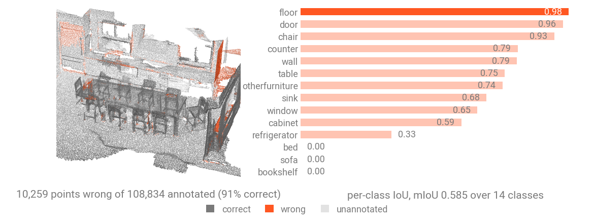
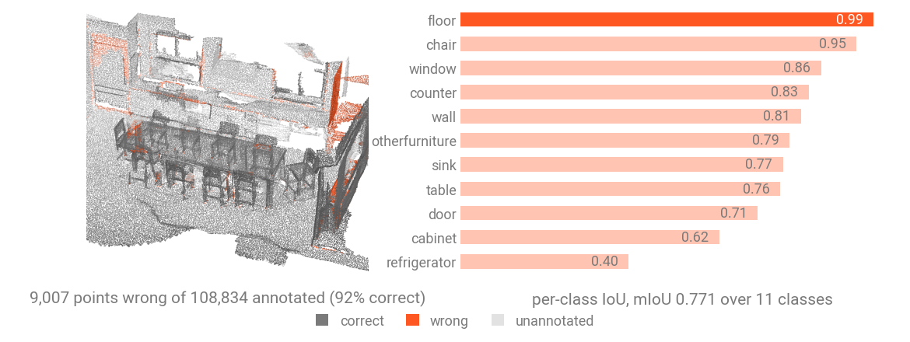
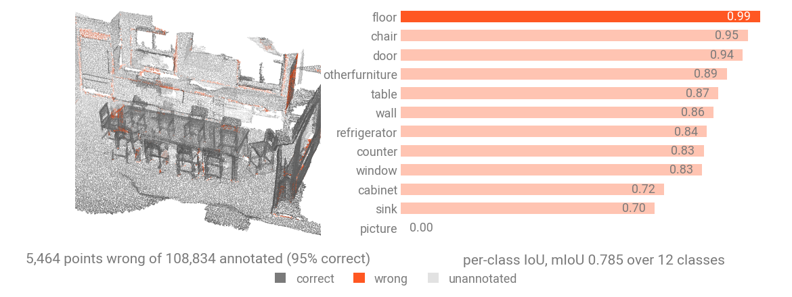

Segment a scene¶
Open in Colab · Download notebook
Semantic segmentation labels every point in a scene / point cloud.
This notebook will guide you on how to use the torch-pointcloud library to load pretrained models and perform inference for semantic segmentation tasks. It will cover:
- the model registry and the
create_modelfactory (thetimm-style entry point), - the inferer API to run a model over a large scene for inference.
Setup¶
# On Colab:
# !pip install "torch-pointcloud"
# !pip install torch-scatter torch-cluster -f https://data.pyg.org/whl/torch-2.10.0+cu128.html
import torch
import torch_pointcloud as tp
torch.manual_seed(0)
device = "cuda" if torch.cuda.is_available() else "cpu"
print("torch-pointcloud", tp.__version__, "| device:", device)
Load a sample scene¶
First, let's read a room of the ScanNet20 validation set, which we will use throughout this notebook. ScanNet requires a signed agreement: request it on its download page and extract it under data/ScanNet/raw/.
Let's load the sample scene and visualize it. The room is a ScanNet scene kept as the vertices of its reconstructed mesh, with a color, a normal and a semantic id of the 20-class benchmark per vertex. One thing is still missing before the checkpoint can read it: the scene has to be voxelized.
import numpy as np
def load_sample():
# Keep the per-point tensors of the first room
return {key: value for key, value in dataset[0].items() if torch.is_tensor(value)}
import matplotlib.pyplot as plt
# View defined as: (elevation, azimuth)
ROOM_VIEW = (34, -160)
def show_cloud(pos, color=None, *, ax=None, title=None, size=1, cmap="viridis", view=ROOM_VIEW):
"""Scatter a point cloud. `pos` is (N, 3); `color` is per-point RGB, a label vector, or None."""
if ax is None:
ax = plt.figure(figsize=(4, 4)).add_subplot(projection="3d")
p = pos.detach().cpu().numpy()
c = color.detach().cpu().numpy() if torch.is_tensor(color) else color
kw = {"cmap": cmap} if c is not None and np.ndim(c) == 1 else {}
ax.scatter(p[:, 0], p[:, 1], p[:, 2], c=c, s=size, depthshade=False, linewidths=0, **kw)
ax.view_init(elev=view[0], azim=view[1])
ax.set_box_aspect(p.max(axis=0) - p.min(axis=0), zoom=1.6)
ax.set_axis_off()
if title:
ax.set_title(title, fontsize=10)
return ax
Find a model in the registry¶
Models are built by name through a single factory, create_model, mirroring timm.create_model. Names follow the pattern <arch>-<variant>.<dataset>.<author>.
You can list what is available for a task with list_models (it accepts a glob pattern):
from torch_pointcloud.models import list_models
list_models("*pointcept*", task="semantic-segmentation", pretrained=True)
# ['concerto-large-lp.scannet20.pointcept',
# 'ptv3-base.s3dis-area5.pointcept',
# 'ptv3-base.scannet20.pointcept',
# 'ptv3-base.scannet200.pointcept',
# 'spunet-v1m1.scannet20.pointcept',
# 'utonia-lp.scannet20.pointcept']
create_model returns a typed SemanticSegmentationModel, a regular torch.nn.Module, so .eval() and .to(device) work as usual.
model, info = tp.create_model(
"spunet-v1m1.scannet20.pointcept",
task="semantic-segmentation",
pretrained=True,
return_info=True,
)
model = model.eval().to(device)
# On Colab: !pip install "torch-pointcloud"
# On Colab: !pip install torch-scatter torch-cluster -f https://data.pyg.org/whl/torch-2.10.0+cu128.html
classes = list(info["weights"]["classes"])
print(len(classes), "classes:", ", ".join(classes))
Run the model¶
A segmentation model is called as model(x, pos, batch): features first, then coordinates, then the batch index. It returns a logits vector per point, shape \((N, C_\text{out})\).
However, SpUNet is a voxel backbone, so it never reads the raw points as floats: the model expects a voxelized scene.
This one was pretrained on ScanNet20 with scenes voxelized at 2 cm, and that transform is stored in the info dict (use return_info=True when creating the model to access it).
Note that the transform voxelizes the scene in place: pos, x and segment hold one entry per voxel, the raw cloud is kept under origin_pos / origin_segment, and inverse maps every raw point to its voxel.
from torch_pointcloud.utils.data import collate
data_list = [load_sample()]
data_list = [info["transform"](data) for data in data_list]
data = collate(data_list)
print(data.keys())
for key in data.keys():
print(f"{key}: {data[key].shape}")
# dict_keys(['pos', 'color', 'normal', 'segment', 'instance', 'x', 'origin_pos', 'origin_segment', 'pos_grid', 'inverse', 'batch'])
# pos: torch.Size([164614, 3]) # One position per voxel
# color: torch.Size([164614, 3]) # Colors, one per voxel
# normal: torch.Size([164614, 3]) # Normals, one per voxel
# segment: torch.Size([164614]) # Labels, one per voxel
# instance: torch.Size([164614]) # Instance ids, one per voxel
# x: torch.Size([164614, 6]) # Voxelized features
# origin_pos: torch.Size([237360, 3]) # The original coordinates
# origin_segment: torch.Size([237360]) # The original labels
# pos_grid: torch.Size([164614, 3]) # Integer voxel-grid coordinates
# inverse: torch.Size([237360]) # Inverse mapping from raw points to voxels
# batch: torch.Size([164614]) # Batch index for each voxel
model = model.eval().to(device)
with torch.no_grad():
logits = model(data["x"].to(device), data["pos_grid"].to(device), data["batch"].to(device))
print("logits:", logits.shape)
# logits: torch.Size([164614, 20])
Visualize the predictions¶
Turn logits into probabilities and map predicted labels (voxel-wise) to per-point labels. We will use the inverse key to map the logits back to the original points (revert the voxelization that occurred in the transforms).
logits = logits[data["inverse"].to(device)]
preds = logits.argmax(dim=-1).cpu()
print(f"logits.shape: {logits.shape}")
print(f"origin_pos.shape: {data['origin_pos'].shape}")
from torch_pointcloud.metrics import accuracy, confusion_matrix, intersection_over_union
target = data["origin_segment"]
annotated = target >= 0
cm = confusion_matrix(preds, target, model.num_classes, ignore_index=-1)
iou = intersection_over_union(cm, average="none", zero_division=float("nan"))
involved = ~iou.isnan()
print(f"annotated points: {int(annotated.sum())} of {len(target)}")
print(f"accuracy: {accuracy(cm):.3f}")
print(f"mIoU over the {int(involved.sum())} classes involved: {iou[involved].mean():.3f}")
To see where the model is wrong, color the room by whether each point came back right, and put the per-class IoU next to it. The pale points are the ones the room carries no label for, which both metrics leave out through ignore_index=-1.
from matplotlib.colors import to_rgb
from matplotlib.lines import Line2D
CORRECT, WRONG, UNANNOTATED = "#5c6068", "#ff4c22", "#dcdcdc"
def show_prediction(preds):
"""Color the room by whether each point came back right, beside the per-class IoU of that run."""
cm = confusion_matrix(preds, target, model.num_classes, ignore_index=-1)
iou = intersection_over_union(cm, average="none", zero_division=float("nan"))
present = torch.nonzero(~iou.isnan()).flatten()
ranked = present[iou[present].argsort(descending=True)]
wrong = annotated & (preds != target)
correct = accuracy(cm)
fig = plt.figure(figsize=(11, 4))
ax = show_cloud(
data["origin_pos"],
color=np.array([to_rgb(UNANNOTATED), to_rgb(CORRECT), to_rgb(WRONG)])[annotated.long() + wrong.long()],
ax=fig.add_subplot(121, projection="3d"),
title=f"{int(wrong.sum()):,} points wrong of {int(annotated.sum()):,} annotated ({correct:.0%} correct)",
size=0.4,
)
ax.legend(
handles=[
Line2D([], [], marker="o", linestyle="", color=color, label=name)
for name, color in (("correct", CORRECT), ("wrong", WRONG), ("unannotated", UNANNOTATED))
],
loc="lower center",
bbox_to_anchor=(0.5, 0.0),
ncol=3,
frameon=False,
fontsize=8,
)
ax = fig.add_subplot(122)
bars = ax.barh([classes[int(index)] for index in ranked], iou[ranked].tolist(), color="tab:orange", height=0.6)
ax.bar_label(bars, fmt="%.2f", padding=3, fontsize=8)
ax.invert_yaxis()
ax.set_xlim(0.0, 1.12)
ax.set_xticks([])
ax.tick_params(length=0, labelsize=8)
for spine in ax.spines.values():
spine.set_visible(False)
ax.set_title(f"per-class IoU, mIoU {iou[present].mean():.3f} over {len(present)} classes", fontsize=10)
show_prediction(preds)

Using an inferer¶
An inferer takes a packed-batch dict and a predictor callable, and returns one prediction per input point, shape \((N, C_\text{out})\), aligned to the input order.
Simple Inferer¶
This inferer runs the predictor on the whole scene at once, so it is just a wrapper around the model's forward method, but it adheres to the inferer API.
from torch_pointcloud.inferers import SimpleInferer, SlidingWindowInferer
scene = collate([load_sample()])
def spunet_predictor(data):
# Apply the inference transform to the specific input data
data = info["transform"]({key: value.clone() for key, value in data.items() if torch.is_tensor(value)})
pos_grid = data["pos_grid"].to(device)
batch = torch.zeros(len(pos_grid), dtype=torch.long, device=device)
logits = model(data["x"].to(device), pos_grid, batch)
return logits[data["inverse"].to(device)].cpu()
inferer = SimpleInferer()
preds_whole = inferer(scene, predictor=spunet_predictor)
print("output:", tuple(preds_whole.shape))
Sliding Window Inferer¶
When the scene is too large for one pass, SlidingWindowInferer tiles it into cubic blocks of a fixed metric size, runs the predictor on each, and blends overlapping predictions. With mode="gaussian" points near a block center count more than those at the seam, which softens block boundaries.
inferer = SlidingWindowInferer(block_size=2.0, overlap=0.25, mode="gaussian", softmax=True)
preds_tiled = inferer(scene, predictor=spunet_predictor)
print("output:", tuple(preds_tiled.shape))
print("labels that differ from the whole-scene run:", int((preds_tiled.argmax(-1) != preds_whole.argmax(-1)).sum()))
fig = plt.figure(figsize=(9, 4))
show_cloud(data["origin_pos"], color=preds_whole.argmax(-1), ax=fig.add_subplot(121, projection="3d"), title="whole scene at once", size=0.4)
show_cloud(data["origin_pos"], color=preds_tiled.argmax(-1), ax=fig.add_subplot(122, projection="3d"), title="stitched from 2 m blocks", size=0.4);
Test-time augmentation Inferer¶
Test-time augmentation wraps a base inferer, runs several augmented passes over the input, and averages the predictions.
from torch_pointcloud.inferers import TTAInferer
from torch_pointcloud.transforms import RandomRotate
views = [
RandomRotate(keys=("pos", "normal"), angle_range=(angle, angle), axis=2, p=1.0)
for angle in (0.0, 90.0, 180.0, 270.0)
]
inferer = TTAInferer(base=SimpleInferer(softmax=True), transforms=views)
voted = inferer(scene, predictor=spunet_predictor).argmax(dim=-1).cpu()
cm = confusion_matrix(voted, target, model.num_classes, ignore_index=-1)
iou = intersection_over_union(cm, average="none", zero_division=float("nan"))
involved = ~iou.isnan()
print(f"accuracy: {accuracy(cm):.3f}")
print(f"mIoU over the {int(involved.sum())} classes involved: {iou[involved].mean():.3f}")

Ensembling¶
The cell below ensembles two checkpoints: each runs through a TTAInferer wrapping a SimpleInferer, and their probabilities are averaged.
def probabilities(name):
member, member_info = tp.create_model(name, task="semantic-segmentation", pretrained=True, return_info=True)
member = member.eval().to(device)
def predictor(data):
window = member_info["transform"]({key: value.clone() for key, value in data.items() if torch.is_tensor(value)})
pos_grid = window["pos_grid"].to(device)
batch = torch.zeros(len(pos_grid), dtype=torch.long, device=device)
logits = member(window["x"].to(device), pos_grid, batch)
return logits[window["inverse"].to(device)]
inferer = TTAInferer(
base=SimpleInferer(softmax=True),
transforms=views
)
voted = inferer(scene, predictor=predictor)
member.cpu()
torch.cuda.empty_cache()
return voted.cpu()
model_names = ("spunet-v1m1.scannet20.pointcept", "concerto-large-lp.scannet20.pointcept")
merged = torch.stack([probabilities(name) for name in model_names]).mean(dim=0).argmax(dim=-1)
cm = confusion_matrix(merged, target, model.num_classes, ignore_index=-1)
iou = intersection_over_union(cm, average="none", zero_division=float("nan"))
involved = ~iou.isnan()
print(f"accuracy: {accuracy(cm):.3f}")
print(f"mIoU over the {int(involved.sum())} classes involved: {iou[involved].mean():.3f}")
